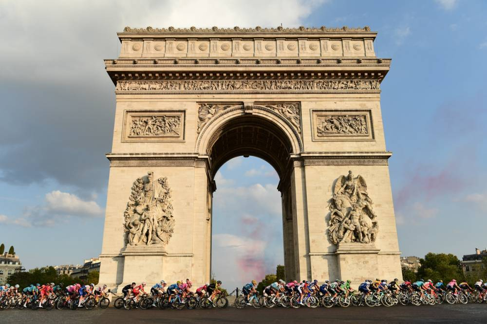

The race was first organized in 1903 to increase sales for the newspaper L'Auto[3] and is currently run by the Amaury Sport Organisation.[4] The race has been held annually since its first edition in 1903 except when it was stopped for the two World Wars.[5] As the Tour gained prominence and popularity, the race was lengthened and its reach began to extend around the globe. Participation expanded from a primarily French field, as riders from all over the world began to participate in the race each year. The Tour is a UCI World Tour event, which means that the teams that compete in the race are mostly UCI WorldTeams, with the exception of the teams that the organizers invite.[6][7] It has become "the world's biggest annual sporting event."[8] A women's Tour de France was held under different names between 1984 and 2009. Since 2014, the La Course by Le Tour de France is held for women in a one- or two-day format during the men's race.
Traditionally, the race is held primarily in the month of July. While the route changes each year, the format of the race stays the same with the appearance of time trials,[1] the passage through the mountain chains of the Pyrenees and the Alps, and the finish on the Champs-Élysées in Paris.[9][10] The modern editions of the Tour de France consist of 21 day-long segments (stages) over a 23-day period and cover around 3,500 kilometres (2,200 mi).[11] The race alternates between clockwise and counterclockwise circuits of France.
There are usually between 20 and 22 teams, with eight riders in each. All of the stages are timed to the finish; the riders' times are compounded with their previous stage times.[1] The rider with the lowest cumulative finishing times is the leader of the race and wears the yellow jersey.[1][13] While the general classification garners the most attention, there are other contests held within the Tour: the points classification for the sprinters, the mountains classification for the climbers, young rider classification for riders under the age of 26, and the team classification, based on the first three finishers from each team on each stage.[1] Achieving a stage win also provides prestige, often accomplished by a team's sprint specialist or a rider taking part in a breakaway.